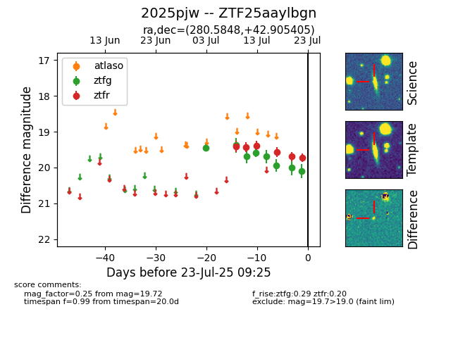

Target ZTF25aaylbgn at 2025-07-23 12:37, see:
FINK: fink-portal.org/ZTF25aaylbgn
Lasair: lasair-ztf.lsst.ac.uk/objects/ZTF25aaylbgn
ALeRCE: alerce.online/object/ZTF25aaylbgn
TNS: wis-tns.org/object/2025pjw
YSE: ziggy.ucolick.org/yse/transient_detail/2025pjw
alt names
ZTF25aaylbgn (ztf,fink)
2025pjw (tns,yse)
coordinates:
equatorial (ra, dec) = (280.5848,+42.90540)
galactic (l, b) = (71.9299,+19.65181)
photometry
last ztfg=20.09, ztfr=19.72
8 ztfg, 6 ztfr detections
